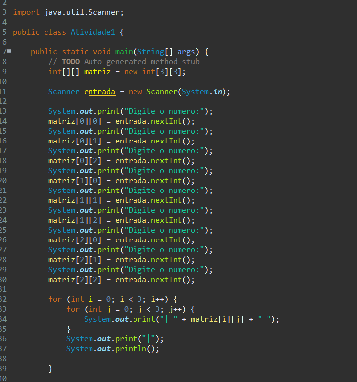
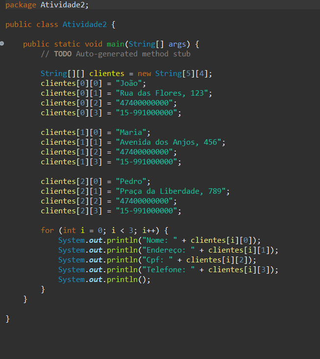
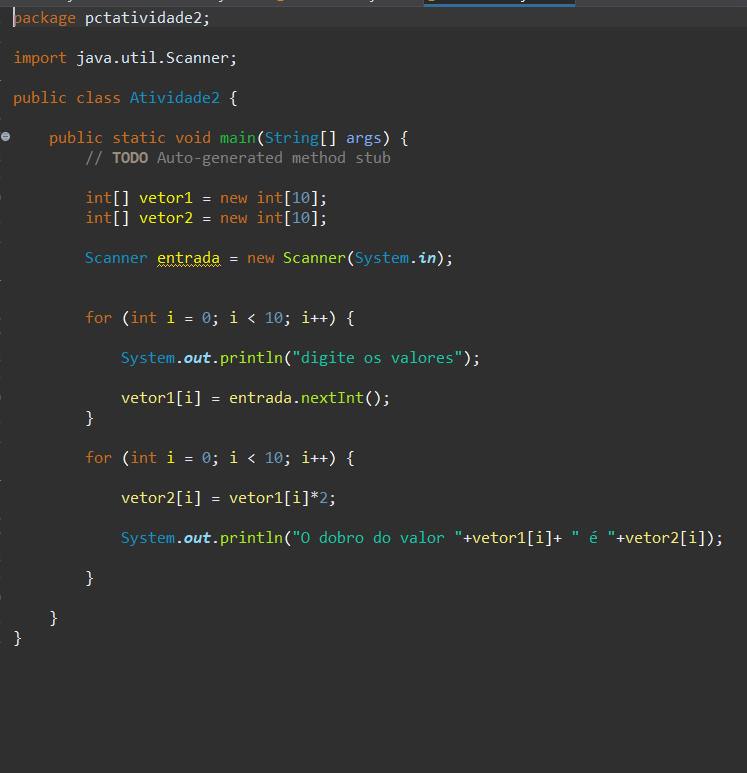
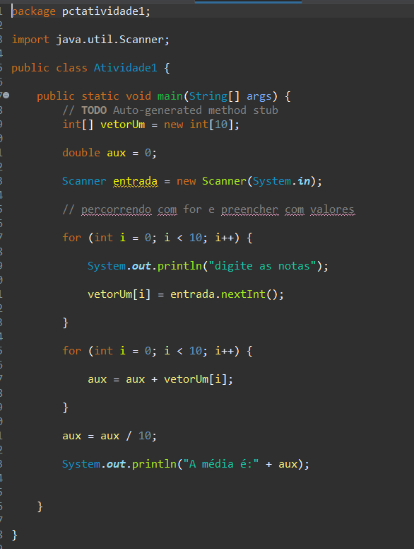
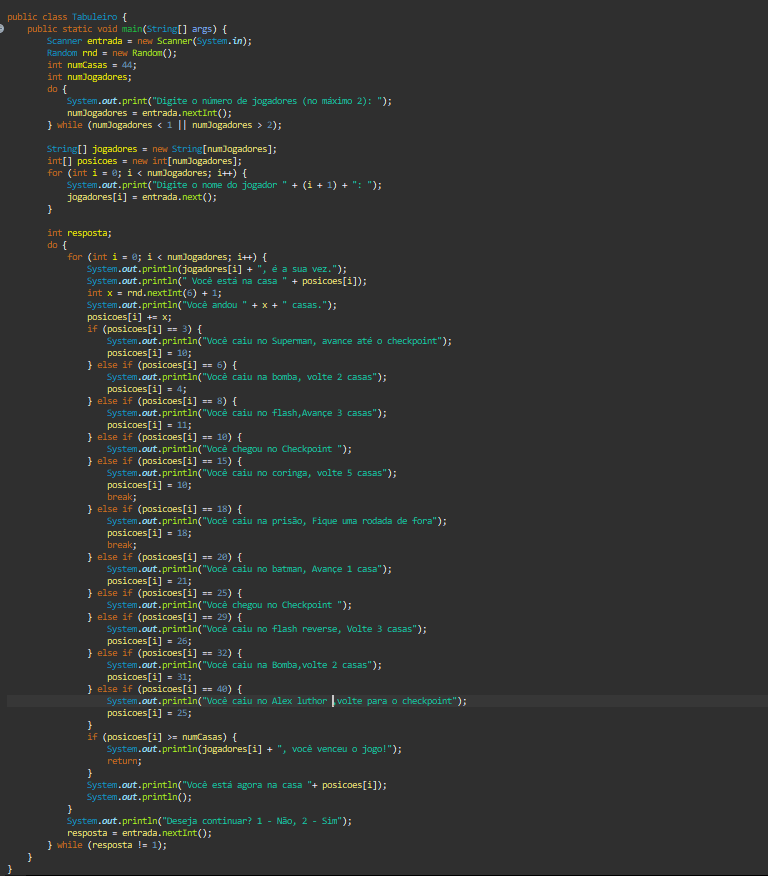
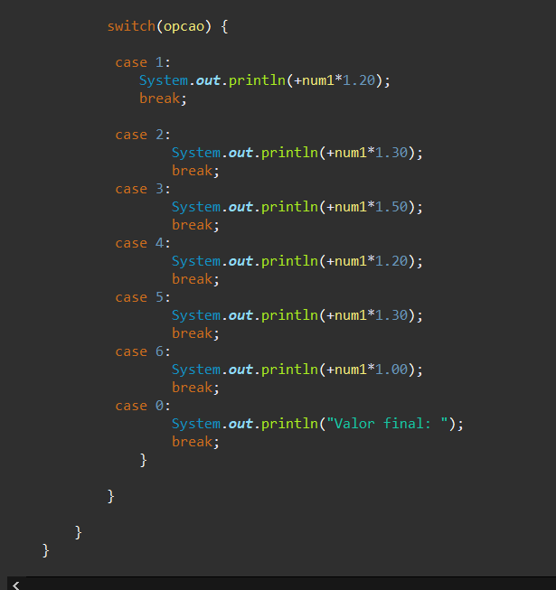
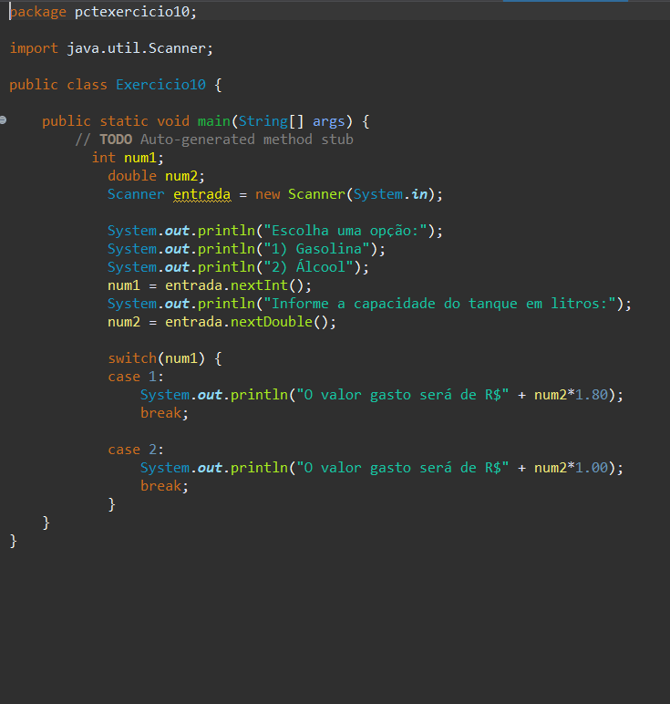

A principal função de uma matriz é permitir que você armazene e manipule coleções de dados de maneira organizada.
 A principal função de um vetor é permitir que você use uma única variável vinculada dimensionada com um determinado tamanho.
 Jogo de tabuleiro para duas pessoas.
Tais estruturas são denomimadas estruturas de repetição e podem ser construidas de 3 formas:
Usada para: escolher apenas um conjunto de ações dentre vários alternativos.
 